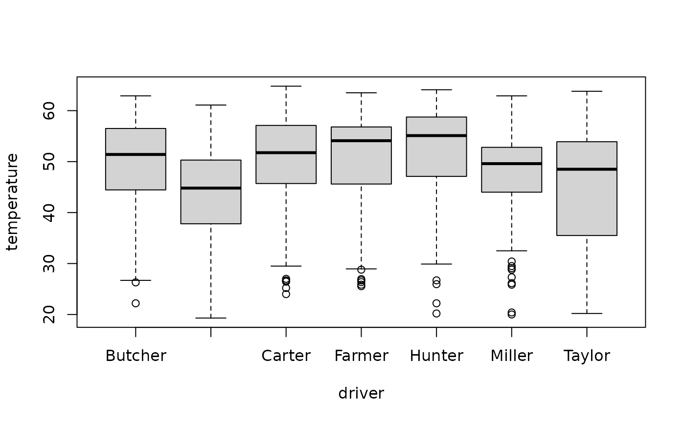

Return outliers following Tukey's boxplot and Hampel's median/mad definition.
Usage
outlier(x, method = c("boxplot", "hampel"), value = TRUE, na.rm = FALSE)Arguments
- x
a non-empty numeric vector of data values
- method
the method to be used. So far Tukey's boxplot and Hampel's rule are implemented.
- value
logical. If
FALSE, a vector containing the (integer) indices of the outliers is returned, and ifTRUE(default), a vector containing the matching elements themselves is returned.- na.rm
logical. Should missing values be removed? Defaults to
FALSE.
Details
Outlier detection is a tricky problem and should be handled with care. We
implement Tukey's boxplot rule as a rough idea of spotting extreme values.
The fences are built from the hinges, exactly as
boxplot.stats does, so the result matches what
a boxplot of the same data draws. Note that the hinges are not the
type-7 quartiles of quantile and differ from them
for many sample sizes.
Hampel considers values outside of median +/- 3 * (median absolute deviation) to be outliers.
References
Hampel F. R. (1974) The influence curve and its role in robust estimation, Journal of the American Statistical Association, 69, 382-393
See also
Other data.inspection:
abstract()
Examples
outlier(Pizza$temperature, na.rm=TRUE)
#> [1] 20.00 20.45 22.20 20.35 22.10 21.30 21.00 21.60 21.70 21.80 22.20 22.50
#> [13] 20.40 21.90 19.40 20.20 19.30 20.20 22.40
# it's the same as the result from boxplot
sort(Pizza$temperature[outlier(Pizza$temperature, value=FALSE, na.rm=TRUE)])
#> [1] 19.30 19.40 20.00 20.20 20.20 20.35 20.40 20.45 21.00 21.30 21.60 21.70
#> [13] 21.80 21.90 22.10 22.20 22.20 22.40 22.50
b <- boxplot(Pizza$temperature, plot=FALSE)
sort(b$out)
#> [1] 19.30 19.40 20.00 20.20 20.20 20.35 20.40 20.45 21.00 21.30 21.60 21.70
#> [13] 21.80 21.90 22.10 22.20 22.20 22.40 22.50
# nice to find the corresponding rows
Pizza[outlier(Pizza$temperature, value=FALSE, na.rm=TRUE), ]
#> index date week weekday area count rebate price operator
#> 20 20 2014-03-01 9 6 Westminster 1 FALSE 11.990 Rhonda
#> 41 41 2014-03-01 9 6 Brent 2 FALSE 24.980 Rhonda
#> 47 47 2014-03-02 9 7 Brent 4 TRUE 78.957 Allanah
#> 142 142 2014-03-05 10 3 Brent 3 FALSE 39.970 Allanah
#> 190 190 2014-03-06 10 4 <NA> 1 FALSE 12.990 Maria
#> 202 202 2014-03-06 10 4 Westminster 2 FALSE 25.980 Maria
#> 206 206 2014-03-06 10 4 Westminster 7 TRUE 134.334 Maria
#> 257 257 2014-03-08 10 6 Westminster 5 TRUE 61.155 Allanah
#> 273 273 2014-03-08 10 6 Camden 3 FALSE 42.970 Allanah
#> 298 298 2014-03-08 10 6 Westminster 3 FALSE 39.970 Allanah
#> 300 300 2014-03-08 10 6 Westminster 4 TRUE 53.964 Allanah
#> 305 305 2014-03-08 10 6 Westminster 3 FALSE 49.970 Allanah
#> 306 306 2014-03-08 10 6 Westminster 2 FALSE 29.980 Allanah
#> 309 309 2014-03-08 10 6 Camden 3 FALSE 45.970 Allanah
#> 343 343 <NA> NA NA Westminster 3 FALSE 71.700 Allanah
#> 611 611 2014-03-16 11 7 Brent 2 FALSE 29.980 Allanah
#> 1077 1077 2014-03-29 13 6 Westminster 5 TRUE 70.155 Rhonda
#> 1101 1101 2014-03-29 13 6 Westminster 3 FALSE 47.970 Maria
#> 1104 1104 2014-03-29 13 6 Westminster 1 FALSE 10.990 Rhonda
#> driver delivery_min temperature wine_ordered wine_delivered wrongpizza
#> 20 Miller 37.3 20.00 0 0 FALSE
#> 41 Taylor 39.7 20.45 0 0 FALSE
#> 47 Hunter 9.2 22.20 1 1 FALSE
#> 142 Taylor 20.1 20.35 0 0 FALSE
#> 190 Carpenter 36.7 22.10 0 0 FALSE
#> 202 Carpenter 39.8 21.30 0 0 FALSE
#> 206 Carpenter 47.7 21.00 1 1 FALSE
#> 257 Carpenter 43.6 21.60 0 0 FALSE
#> 273 Taylor 40.4 21.70 0 0 FALSE
#> 298 Carpenter 49.6 21.80 0 0 FALSE
#> 300 Butcher 31.2 22.20 0 0 FALSE
#> 305 Carpenter 63.2 22.50 0 0 FALSE
#> 306 Miller 36.7 20.40 0 0 TRUE
#> 309 Taylor 55.0 21.90 0 0 FALSE
#> 343 Carpenter 62.9 19.40 1 1 FALSE
#> 611 Taylor 36.3 20.20 0 0 FALSE
#> 1077 Carpenter 65.6 19.30 0 0 FALSE
#> 1101 Hunter 53.4 20.20 0 0 FALSE
#> 1104 Carpenter 46.5 22.40 0 0 FALSE
#> quality vegetarian nps complaint style channel tip
#> 20 low 0 5 0 gourmet app 1.24
#> 41 low 0 2 NA vegan app 0.00
#> 47 low 0 6 0 vegan app 5.07
#> 142 low 0 6 0 american app 6.02
#> 190 medium 0 7 1 vegan app 0.00
#> 202 medium 0 1 0 gourmet app 0.00
#> 206 medium 0 6 0 italian app 4.15
#> 257 low 0 2 0 italian web 0.00
#> 273 low 0 3 NA gourmet app 0.00
#> 298 <NA> 1 5 NA italian app 0.71
#> 300 low 0 2 0 italian web 0.00
#> 305 low 0 3 1 vegan web 0.00
#> 306 <NA> 0 8 NA vegan app 1.91
#> 309 low 0 6 0 italian app 3.96
#> 343 <NA> 0 9 NA italian app 2.59
#> 611 low 0 2 0 american web 0.00
#> 1077 low 0 5 0 italian app 0.99
#> 1101 medium 1 5 0 italian app 0.00
#> 1104 low 0 3 0 italian web 0.00
# compare to Hampel's rule
outlier(Pizza$temperature, method="hampel", na.rm=TRUE)
#> [1] 20.00 20.45 22.20 20.35 22.10 21.30 21.00 21.60 21.70 21.80 22.20 20.40
#> [13] 21.90 19.40 20.20 19.30 20.20 22.40
# outliers for the each driver
tapply(Pizza$temperature, Pizza$driver, outlier, na.rm=TRUE)
#> $Butcher
#> [1] 26.3 22.2
#>
#> $Carpenter
#> numeric(0)
#>
#> $Carter
#> [1] 27.00 26.60 26.45 24.00 26.70 25.20
#>
#> $Farmer
#> [1] 26.35 28.80 25.85 26.95 25.55 26.70
#>
#> $Hunter
#> [1] 22.20 25.95 26.70 20.20
#>
#> $Miller
#> [1] 28.80 20.00 25.85 26.15 29.10 30.40 20.40 29.50 27.30
#>
#> $Taylor
#> numeric(0)
#>
# the same as:
boxplot(temperature ~ driver, Pizza)$out

#> [1] 26.30 22.20 27.00 26.60 26.45 24.00 26.70 25.20 26.35 28.80 25.85 26.95
#> [13] 25.55 26.70 22.20 25.95 26.70 20.20 28.80 20.00 25.85 26.15 29.10 30.40
#> [25] 20.40 29.50 27.30